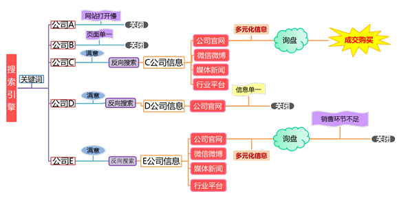
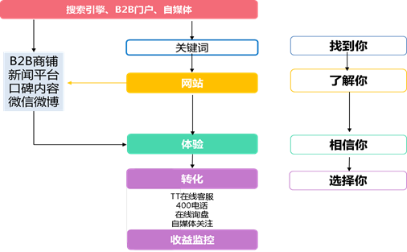

中小商务部T云2.0话术考核（参考答案）
姓名： 部门： 职务： 得分：
2015年12月版
1、 我已经有网站，也做了百度竞价了，不需要了。（10分）
很多企业认为做个网站、做几个关键词上线，网络营销就做的差不多了。可是这在我们看来，只做了连一半都不到。企业做线上推广的目的是什么，是不是让客户找到咱们，最终给咱们打电话询盘，您说是吗？我们公司就是帮您完成客户询盘过程中这一系列的服务的。
关于怎么做才能让客户最终跟我们询盘，电话里讲也说不清楚，那我今天下午到您公司来一下，当面跟您详细讲解一下，也让您知道您公司目前整体的网络营销效果如何，以及还有哪些点是可以提升的。（第一次邀约，如不成功，请继续）（7分）
那我在电话里简单的跟您分析一下吧，首先从客户入口来说，一个平台肯定是不够的，也比较单一，就平台来说，目前主流的有3000家平台网站和4大搜索引擎以及效果和转化都很不错的自媒体这一块，也就是我们通常说的全网曝光。您现在在几家平台上做投放？
其次，虽然百度的客户占有率相对多一些，但就算在百度上做推广依然有很多细节点是需要注意的。
1） 第一点，就是您的关键词选择，甄选出潜在客户经常搜索的关键词是第一步，另外您的标题和内容描述的设置，我们专业上叫做TDK设置，直接影响到客户对您展示信息的点击量，如果您设置不正确的话，客户根本找不到您，或者不会点击您。关于这方面的正确设置，我们有10年的营销经验可以给到您专门的指导。您现在做了哪些关键词？（1分）
2） 第二点，客户点击进入了您的网站，您的网站要如何设置和布局才能够在同行网站中更胜出，让客户喜欢呢？如果做快照也就是自然排名的话，您的网站代码编写有利于在搜索引擎上被抓取有很好的排名吗？毕竟我们都知道，快照比竞价有太多优势了，省钱，稳定，在线时间长等等，可是很多企业都不懂也没有注重过这一方面。我们专业制作网站和SEO优化已经有10年的经验，在这个方面也能给您最专业的帮助。咱们网站（1分）
3） 第三点，您在百度上的呈现信息是只有一个网站呢？还是有网站、新闻、百科、问答、行业平台展示等多样化的信息呢？关于这网络正面口碑一块您会设置吗？其实，客户之所以选择跟我们打电话，是由他的综合体验或感觉来决定的。这些细节没有完善和注意的话，我们之前所做的再多努力可能都要付诸流水。（1分）
（在阐述过程中，结合客户情况和兴趣点有侧重的进行沟通。注意要及时发起约见，要求当面讲解，不需要全部讲完。如不成功可继续沟通，并再次邀约）
王总，您觉得我说的这些环节对一个企业来说，是不是都很重要？您可能要说，全部都做的话，会有几个难点，一个是不懂怎么做，第二是没那么多钱，第三是没有那么多人力和精力，是不是？其实，这些问题我们早就考虑到了，我们给您解决这些问题，特别与复旦大学联合研发了一款叫做“T云”的工具类产品，下午我们见个面我给您详细的介绍一下吧？你是2点方便还是3点方便？（总结性邀约）
2、 你们是做什么的，是做推广的吗？（10分）
我们不是做推广的。
我们是专业的网络营销顾问，首先为您企业的互联网现状做一个分析，同时按您的实际情况，给您一个以培训为主导的一套可落地实操的工具，来帮助您完善互联网上的营销环节，通过教给您如何更好的去做互联网广告投放，使您在竞价、优化、行业平台等各个方面都有一个好的展示和效果转化。
我们将这套工具以及方法，称之为“T云”系统，是我们珍岛结合自身10年的网络营销经验和复旦大学的院士专家们联合研发的。这套系统的使命就是将让企业困惑的，繁琐复杂的网络营销变得简单，将全网营销一站式的整合在一套操作便捷的系统工具里，同时让您也更懂互联网，成为半个互联网营销的专家，从而在同行竞争中更胜一筹。
我们在每一个细分行业内只选择10家成为我们的T云产品的用户。我们的目标是把其中的3家打造成为行业的前3名。我主要是开发您这个行业的，具体我们是怎么帮您做到行业前3的，下午我带一些我们的产品介绍和案例来跟您当面聊一下吧？（拒绝）
我跟您见面又不是让您一定要买产品，只是跟您聊一聊互联网营销应该如何做，咱们企业目前做网络营销的困惑和可提升的点在哪里。您见我您又没有损失，我想，多一个懂网络营销的朋友对您的生意应该是有帮助的吧？我们做销售的本来也是广交朋友，每天要在外面跑的，咱们只不过是见面聊聊，您觉得我说的有道理，再谈合作也不迟。您是明天上午方便还是下午方便？
3、 我们找专门的互联网公司做优化都没做好你教我能做好？（10分）
王总，你找专门的SEO外包公司做优化，一般也就是做几个词，而且价格挺高。我们以为只要关键词在首页展示就应该有效果的。
1） 但很多细节是我们没有考虑到，比如选择的这几个词是不是客户经常搜索的词？如果词选不对，客户不搜这个词，那您没有询盘效果也很正常了。
2） 另外，帮您操作的公司的实力怎么样？在您这个业务上他们投入了多少人力？因为SEO的结果与操作技巧和操作量都有关系，万一选的公司不好，那效果肯定是不好的。
我们珍岛公司成立10年来，专注于做SEO优化，有一整套的技术能确保想做的词一定能做上去，可以这么跟您说，没有做不上去的词，只是根据热度需要的时间长短不同。现在我们把做上去的原理和方法教给您，而且简化了操作的过程，整合在一套工具里，只要按时做些流程化的操作就可以了，这样达到的效果不会比您找专业的公司差。因为我们就是最专业的。
关于效果是和您操作的量是挂钩的，这和做生意一定要勤奋是一个道理的，您操作的多，那词就会上线的更多和更快。和我们合作的公司只要是按照我们指导的来进行操作的，没有效果不好的，您看今天下午我带些您同行的案例来给您看一下吧，也让您更好的去理解这一块。您公司地址是在xx路吧？（邀约，拒绝）
王总，我相信您的产品应该不止一个吧，如果把你的产品词都交给别人做，这笔花费应该也不小吧？这就像我们花10万元钱吃一年鱼，吃完就没了，下年还需要再交钱，但是如果我们给你两条可以产鱼的鱼，并且教给你养鱼的方法，那这样是不是比你刚才的那种方法好，这样是不是效果就会比你刚才的那种方法好？我们T云这套工具就是教会你做无限量关键词上线的方法，让您只花费很少的钱就能获得更大的持续不断的收益。您看，现在都互联网4.0时代了，您的网络营销思维也应该与时俱进了，下午咱们见面聊聊，也更新一下您对网络营销的认识！相信认识我您一定会觉得很值得的！（邀约）
4、 群发软件没效果（10分）
关于群发软件到底有什么作用，我们可以从它的作用来分析。群发软件是把信息大量的曝光到互联网上，那么曝光具有2重效果。
第一重效果，让客户看到你。看到的多了，自然会加深印象，增加这个品牌在客户心目中的分量。这也就像你把广告到处张贴是一样的。曝光肯定是越多越好。曝光后没效果，有几点原因。
1） 你虽然到处曝光，但平台的权重不高，所以效果不好。就像你在湖南卫视做广告和在你们县城的电视台做广告效果能一样吗？T云有80个左右权重超过7的优质平台和3000家来帮助你曝光。高权重平台上的信息是很容易被收录到首页的。
2） 目标客户定位不清晰，你要是在少儿频道播放老年保健品这效果能好吗？我们T云可以帮你自动匹配与行业和产品相关度很高的精准平台的发布，把信息送到真正有需要的人面前。
3） 关键词没选对，如果我们做的关键词客户根本不搜，那肯定效果不好啊！我们T云有智能拓词功能，与搜索引擎词库数据是打通的。确保我们做的词能符合客户的搜索习惯。
4） 其他原因，比如产品介绍的编写不当，或者信息发布麻烦，信息通过率低，展示页面对客户吸引力不够等等。T云可以一键发布3000家平台，操作快速方便，选词精准，还能配合官网来提高客户询盘。
全网曝光的第二个好处是让搜索引擎看到你。为什么呢？群发软件可以很好的给官网发布外链和反链。当反链数量非常大时，能直接提高我们官网的权重，也就是说帮助我们的官网出现在首页。
之前有一个和我合作的（发布宝）的客户，合作了半年之后，搜索热门关键词，这个客户的官网会在百度首页出现，后来他自己发现他们的反链达到了几十万，这个就是群发软件的效果。
再给您举个例子，我之前合作的一个物流行业的客户，我先给他做了100个网站，每个网站都给他设定不同的关键词，把主产品的关键词放在首页，当时这个客户雇了两个人（只会打字就可以），让他们每天打开这个软件进行操作，添加文章把网站的连接做到很多平台上面，最终的效果就是这个客户想做的关键词都在百度首页，就连物流这个热门词也可以找到他们公司。
5、 做营销为什么要广、深、精？什么是广、深、精？（10分）
李总，互联网发展到今天，线上的竞争已经很激烈了，当我们的同行都在做互联网营销时，我们只有在覆盖面上做的比同行更广，在产品细节度上做的比同行更深，在平台和客户的定位上比同行更精准，才有可能获得更多的线上客户，提升我们的成交额。
具体的说：
广：就是我们花费最小的代价，能在客户可能出现的平台上面有我们的信息。
深：我们要经常更新我们产品的信息，把我们的产品做得更细，更全面的发布你的信息在客户可能出现的平台上。
精：首先平台定位要精，关键词定位要清楚和客户定位要清晰。
6、 写一段T云2.0电话邀约的开场白（10分）
1） 王总，冒昧打扰您了，我是互联网数据中心的调查员，想了解一下您公司目前互联网推广的现状，我们可以帮助您分析并出一个免费的诊断报告，并且帮您找到解决方法，您是否方便沟通一下？（您看是周二有空还是周三有空，我带着诊断报告给您当面分析一下？）
2） 王总，您好！我是上海珍岛的xxx，之前在龙阳路展会上和您交换名片的，您还记得吧？我主要是负责服装行业的网络推广的，您的行业很多客户都在我们这边做，我们现在要在每个行业的细分领域找10家企业，帮助他们成为行业的标杆。您有兴趣了解一下吗？
3） 您好，是XX公司吗？我们珍岛公司是有着十年网络营销经验的网络服务提供商，针对目前很多企业存在网络营销推广方面的困惑，我们特推出了培训指导服务。不仅可以教会您做免费的点击推广，并且让您付费的推广更省钱效果更好，还能教会您去做B2B平台和自媒体等多样化的宣传模式。真正让您学会如何去做网络营销，最重要的是我们会送您一套易操作可落地的系统来让您实现您所学到的方法。这套系统里面包含了很多工具，如果单个购买的话，市面上的价值也超过好几万了，现在也是免费使用的。我们这周只有30个免费的试听名额，您今天登记的话，我可以帮您申请一个。
4） 我们与复旦大学联合研发了一套T云系统，是以一站式服务+工具来实现的。可以让您公司网站的关键词更多展示在搜索引擎、行业平台上去，并且教会您通过这套系统实现客户转化的方法，您下午2点在公司吗？我们面谈一下。
5） 王总，您好！针对中小企业做互联网所遇到的难题，我们整合了一套软件，T云2.0系统，能够帮助您企业实现自主营销，实现从平台到推广到转化以及监测一条龙的全程可控的推广模式，达到的效果是多种推广平台、首页多条信息、多个关键词的霸屏模式。今天下午我带着这套系统来给您演示一下，您也可以顺便检测一下您网站在2015年网站中的排名和评分如何？
6） 王总您好，我是专做“丝印”这个行业的网络营销顾问，您现在方便用电脑吧？您搜一下“上海丝印”这个词，上海明德排在快照的第一个，这是我的客户，他现在很多词都在首页，您一定也希望达到这种效果吧？方便的话，下午2点我去您公司帮您具体分析介绍一下吧？
7） 王总，您好！看到您在百度竞价、优化、阿里巴巴等多个平台上都进行了广告投放，说明您还是很重视互联网这一块的投入的。我们现在有一款效果整合的工具，能够帮您覆盖以上所有的平台，系统能对您的网站和关键词进行监测和诊断分析，而且将全部数据汇总到一个平台，方便您的操作和管理。同时，我们覆盖的平台也会比您现在更多，能实现的关键词数量也更多。而且我们还会有丰富的网络营销课程教会您进行自主营销您看今天下午您在公司吗？我把这套系统工具带给您看一下。
8） 王总，您好！您的很多同行都跟我反映，说做了竞价或者优化了，但效果并不理想，或者虽然有关键词在首页，但客户的转化率不高，不知您有遇到这种情况吗？因为在互联网营销的环节中，有很多个点会影响到我们最后的效果。下午我来给您当面分析一下咱们公司在哪些环节上还可以加强。我们现在有一套工具可以帮助您来完善营销过程中不足的环节，您也可以顺便了解一下。
7、 向客户介绍一下这张图。（20分）

介绍话术：
李总，这个是我们做的针对B端客户线上需求与购买的行为分析图，客户通过搜索引擎（比如百度、360、搜狗等）搜索感兴趣的关键词，就会在首页上出现十几条的信息。通过浏览标题和描述的部分，会选择一些网站来打开。就是我们上面的A、B、C、D、E类公司，或者更多的公司。那些没有被搜索到，或者没有被客户点开的网站，一般都存在关键词设置，标题和描述撰写不合理的问题。这也是我们专业上所说的TDK的设置。
让我们看一下A公司和B公司的网站，客户打开以后，可能有几种情况，一个是服务器响应太慢打不开；或者是网站内容设置太单一、太少、很久没更新，无法提供想了解的信息；或者网站展示的内容和关键词搜到的不一致。这几种情况，客户都会关闭这个网站，不再关注。他们代表的一类公司是网站方面存在问题，导致客户流失。这些问题需要从网站的角度去解决。
如果在以上环节都不错的话，比如C、D、E公司，他们在吸引客户流量和网站展示方面都做的不错。那么客户如何去进行进一步的选择呢？举个例子，我们去淘宝买衣服，点开之后看看都不错，那么我们会看看下面的评价，评价多而且是正面评价时，我们就会觉得它不错。而差评或者没有评论，这样的衣服我们基本不会选择，你说对吗？做为一家公司也是这样，当客户对这几家公司进行选择时，那些在网上有正面口碑信息的比较容易给客户带来信任感。比如微信、微博、公司新闻、问答平台、行业网站等信息都能起到正面口碑的作用。图上的C、E公司做的比较好，而D公司就完全没有涉及。关于这一块，很多公司都没有去做，或者做的并不专业和全面。要想让客户在同行的竞争中能选择你，这个部分我们需要引起充分的重视。
到了这个时候，客户会对感到满意的公司打电话或者在线上进行咨询，这时候的服务决定了客户会不会最后跟你成交，我们能帮你设置的是便捷沟通的渠道，比如在线交流工具、400电话等，但交流的内容和服务也是很重要的一方面，这部分是由您公司的销售人员来决定的，比如接待反应的速度、专业度、报价等综合素质。图上的C公司整个过程都做的很好，最终达成了成交购买。而E公司则在最后的销售环节掉链子了。
我们从这个图上可以看到，这个过程是环环相扣的，只要任何一个环节出了问题，都可能导致客户资源的流失。珍岛就能够帮助您完善这整个的环节。
8、 向客户介绍一下这张图。（20分）

李总通过这个图的分析我们看到的是我们在互联网上面都存在的问题，这也就意味着假设我们在每一个环节都做到100分的时候客户才有可能会和我们成交。
那我们通过这张图应该怎么来做：
第一个，流量入口要多平台、全方位，实现曝光最大化。目前主要是3大模式：搜索引擎、B2B、自媒体。接下来是我们的关键词不仅要准还要多，这样我们潜在的客户才能找你我们这边的几率会大。（找到你）
当客户进入到我们的官方网站的时候，我们的网站信息不仅要展示的是我们自己要展示的还有客户所需要的，比如说客户如果想找的是丝印厂家，但是我们的网站里面没有厂家或者是我们的网站第一时间并没有让客户感觉到你这边是做丝印厂家的，如果是客户没有和其他同行对比的情况下可能会继续走下去，如果是有和其他同行对比的情况下网站如果没有同行的感觉好，客户有可能就会关了是吧。（了解你）
如果对网站满意，客户可能会进行更多的了解，如果他在网上查看到我们的微信、微博和新闻口碑，评价等做的很好，信息展示既正面又全面，客户对我们的认可程度会更高，信任度也更高。如果这一切带给客户的都是一个好的体验，他可能还会继续下一步。（相信你）
客户会根据综合体验来选择一家或几家感受最好的，进行询盘。可能会通过在线客服，400电话，在线询盘等，跟我们联系，我们的反馈是否及时，介绍和报价是否恰当等等，决定了客户是否会跟我们成交。（选择你）
最后，收益监控的环节是对成交的客户进行数据上的统计和分析。来帮助我们不断提高成交率。所以只有当我们都做到100分的时候，用户和我们成交的可能性才会增大。所以，李总，咱们来看看在以上这些环节中，哪些地方我们还可以做的更好？